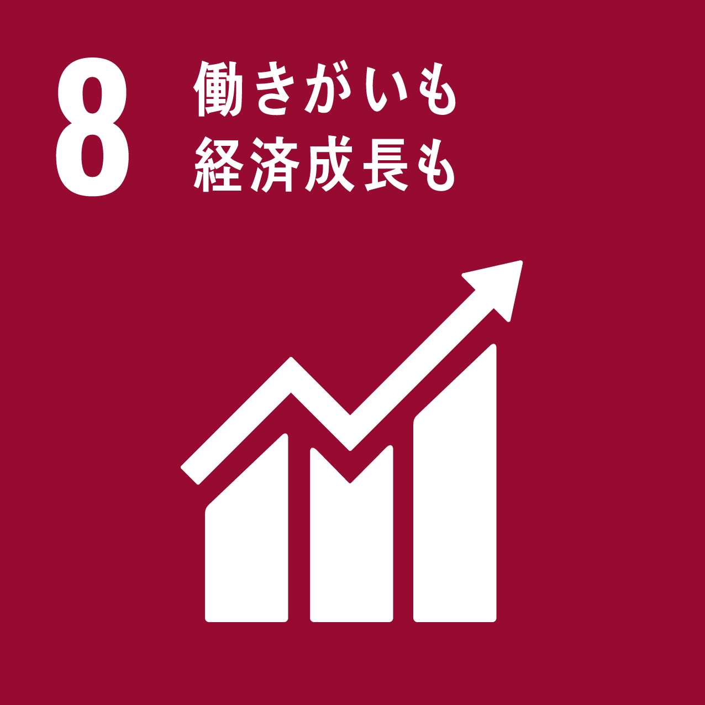

ActionSDGsへの取り組み
環境と共に、地域と共に
私達糸平は資源のリデュース・リユース・リサイクルを推進して、資源消費や廃棄物の発生を抑制し、環境を考え適切な廃棄物処理をするよう取り組んでいます。
細かな仕分けによるゴミの減量化、自社運営店舗でのリユース、提携施設である就労継続支援B型事業所での就労支援、地域包括支援センターと連携して地域貢献活動等、様々な活動を通じてSDGsの目標達成に向けて積極的に取り組んでいます。
1)資源のリデュース・リサイクル
資源回収業で集めた商品を自社工場で細かく仕分けし、リサイクルできる物とできない物を分け、最終処分場に搬出されるゴミの量を減らす。
2)資源のリユース
自社店舗リユースかもめ(東京都大田区大森東1-35コーシャハイム大森東4-111)にて資源回収業で集めた商品の中で、まだ利用可能な物を選別して安価で出品。
3)障害者の就労支援
弊社代表が理事を務めている就労継続支援(B型)事業所ぴおどり(横浜市中区桜木町1-1ぴおシティ)にて就労支援として、資源回収業で集めた商品の中で処分対象となった空缶や空スプレー缶の処理を依頼。
また、常時身体障害者を雇用しており、現場作業時にトラックの車監視員を任せる。


4)地域貢献活動
地域包括支援センターと日頃からコミュニケーションを取りながら、ゴミ処理、片付け、模様替えのアドバイスを行ったり、高齢者を対象に終活セミナーを実施。